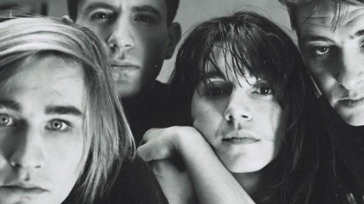

PORTFOLIO - MILOŠ LATKOVIĆ
Interesovanja
EKV
EKV je bila rok grupa iz Beograda, jedna od najuticajnijih i najuspešnijih grupa na prostoru bivše Jugoslavije.
Više o tome...Agata Kristi

AGATA KRISTI je bila britanska književnica, autor brojnih kriminalističkih romana. Kao najpoznatijeg svetskog pisca misterija, nazivaju je i "kraljicom zločina".
Više o tome...